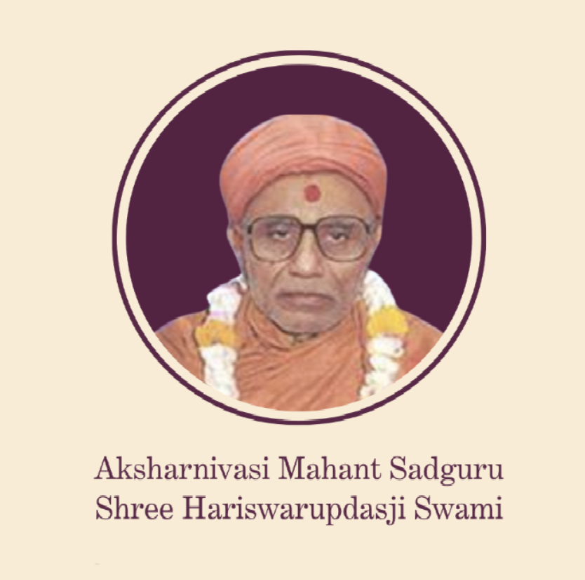
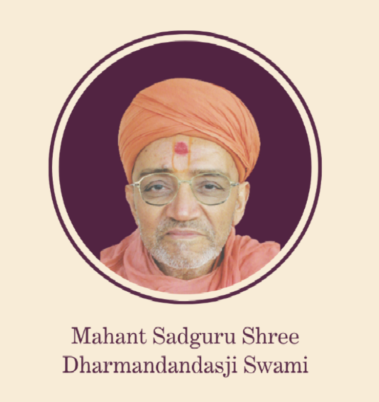
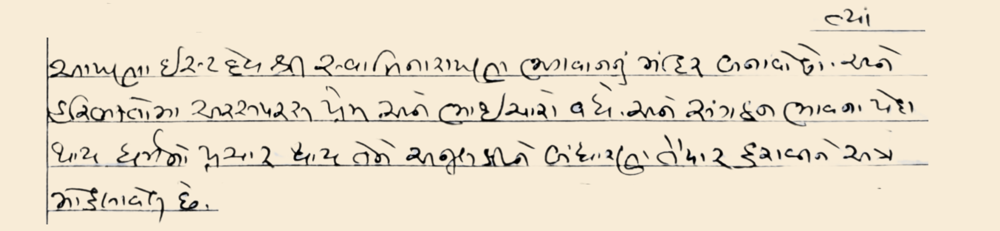

25 Years of Faith & Unity



ત્યાં આપણા ઇષ્ટદેવ શ્રી સ્વામિનારાયણ ભગવાનનું મંદિર બનાવો છો. અને હરિભક્તો અરસપરસ પ્રેમ અને ભાઈચારો વધે અને સંગઠન ભાવના પેદા થાય, ધર્મના પ્રસાર થાય તેને અનુલક્ષને બંધારણ તૈયાર કરાવીને અે મોકલાવેલ છે.
In December 2000, with the blessings of Mahant Sadguru Shree Hariswarupdasji Swami, the journey to establish a spiritual home for Kutchi Haribhakto in Sydney began. Guided by his vision, heartfelt discussions were held and plans slowly took shape.
On 31 May 2001, under Mahant Swami's continued guidance, Upmahant Sadguru Shree Dharmanandandasji Swami penned a heartfelt letter expressing his immense joy at the unity and determination of Sydney's devotees in forming a formal Mandir organisation. In his letter, he blessed the vision of building a Mandir for our Ishtadev, Shree Swaminarayan Bhagwan, in Sydney. He wrote that such a place would nurture mutual affection and brotherhood among devotees, foster a deep sense of sangathan (unity), and help spread our faith far and wide.
On 26 June 2001, this vision became a reality with the official registration of Shree Swaminarayan Temple Sydney Inc., marking the beginning of what has now been a remarkable 25-year journey of satsang in Sydney.
To honour this milestone, we will be celebrating a year-long festival, culminating in a grand event in 2026 from 4 July to 12 July. The theme will be:
Sangathan Parva | A Celebration of Unity
This event will serve as a way to strengthen the bonds among haribhakto across Sydney, promote unity, and inspire increased bhajan bhakti as we come together to celebrate this extraordinary occasion.
With the blessings of Mahant Sadguru Shree Hariswarupdasji Swami, the journey to establish a spiritual home for Kutchi Haribhakto in Sydney began.
Upmahant Sadguru Shree Dharmanandandasji Swami penned a heartfelt letter blessing the vision of building a Mandir in Sydney, emphasising sangathan (unity) — the origin of this celebration's name.
Official registration of Shree Swaminarayan Temple Sydney Inc., marking the beginning of 25 years of satsang in Sydney.
SSYM Sydney established — the first international branch of the Yuvak Mandal. Ghanshyam Gujarati classes also began.
New site secured in Kings Park. Bhoomi Poojan and Khat Muhurat conducted in the presence of His Holiness Mota Maharajshree Tejendraprasadji Maharaj.
Construction completed in nine months. His Holiness Acharya Maharajshree Koshalendraprasadji presided over the Murti Pran Pratishtha — Ghanshyam Maharaj made Sydney His home.
Ghanshyam Dharmik classes launched, providing structured values-based education for children.
Temple transformed into a shikhar bandh structure adorned with a beautiful pink stone facade.
Ghanshyam Music classes expanded to include tabla, keyboard, and singing.
Sydney became the first temple worldwide to adopt the SSMB name, officially aligning under Bhuj Mandir. Svadhyay international syllabus introduced.
The Nilkanth Pipe Band performed at the 200-year anniversary of Bhuj Mandir in India.
Record 210 students enrolled across Dharmik, Gujarati, and Music programmes.
Sangathan Parva — A Celebration of Unity, marking 25 years of SSMB Sydney.